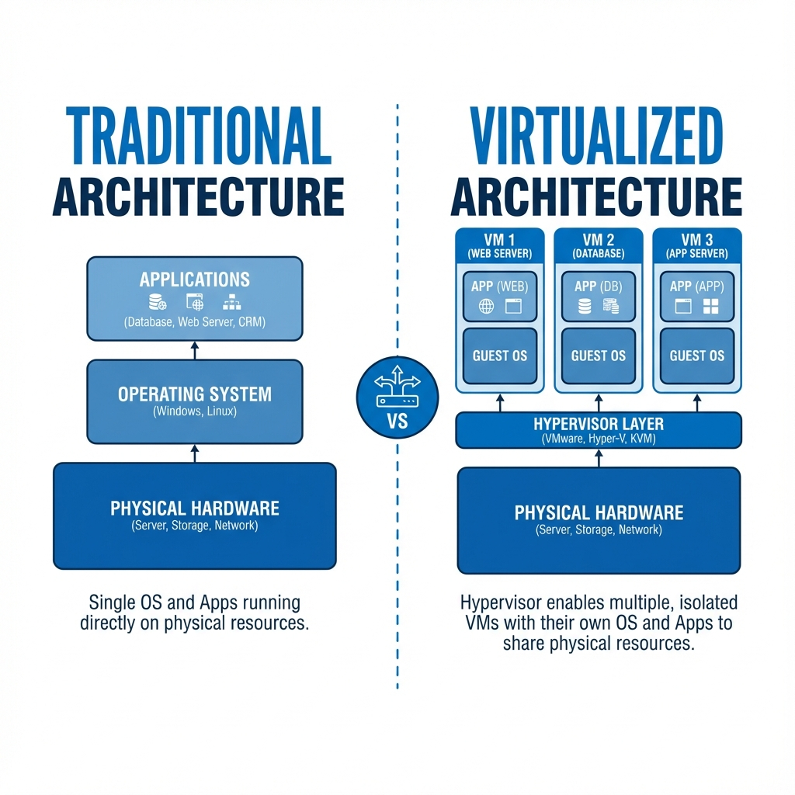
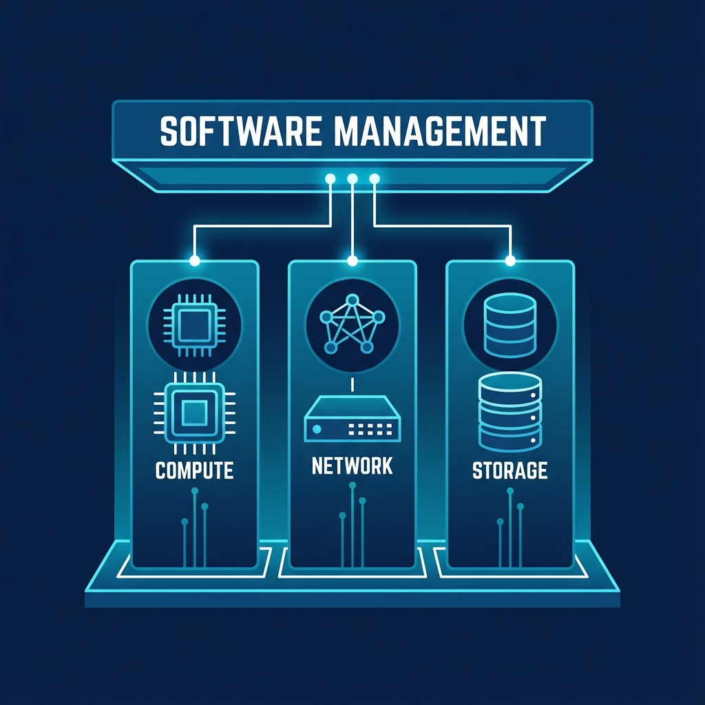

Introduction to Virtualization
Student NotesCourse: Computer Systems Engineering Module: Operating Systems 3 (Virtualisation & Cloud Technologies) Topic: Introduction to Virtualization Estimated Reading Time: 25 Minutes
[!TIP] How to succeed in this week: Focus on understanding the WHY before the HOW. Virtualization solves real problems—hardware consolidation, isolation, and flexibility. As you read, ask yourself: "What problem does this solve?" The lab will make the theory concrete.
Welcome to Week 1!
This document serves as your comprehensive guide to understanding virtualization technology and its foundational role in modern computing infrastructure. Virtualization has fundamentally transformed how organizations deploy, manage, and scale their IT resources.
Important Note: This week is dedicated to Conceptual Mastery. We will explore the architecture of the "Software Defined Data Center" (SDDC)—including Compute, Network, and Storage virtualization. Unlike future weeks which are heavy on implementation, this week focuses on understanding the why and how of the technology before we touch the what. This foundational knowledge is critical; you cannot build a skyscraper without a blueprint.
Next week, we will begin our implementation journey by provisioning our Hypervisor (Proxmox VE) and creating our first Virtual Machines. For now, we focus on the architecture and verifying our hardware readiness.
What You'll Learn This Week
- The Virtualization Abstraction: How software lies to hardware to enable efficiency.
- Hypervisor Architectures: The critical difference between Type-1 (Bare Metal) and Type-2 (Hosted) systems.
- The Software Defined Data Center (SDDC): Moving beyond just VMs to visualize Virtual Networking (SDN) and Software Defined Storage (SDS).
- The Modern Roadmap: How virtualization serves as the bedrock for Cloud Computing and Containerization.
1. Understanding Virtualization
Virtualization is a technology that enables the creation of virtual instances of computing resources, allowing multiple operating systems and applications to run concurrently on a single physical hardware platform. At its core, virtualization abstracts the physical hardware layer, presenting virtualized resources to guest operating systems as if they were dedicated physical components. This abstraction is what enables a single physical server with sufficient resources to host multiple virtual machines, each running its own operating system and applications in isolation from one another.
1.1 The Concept of Abstraction
The fundamental principle underlying virtualization is abstraction. In traditional computing, an operating system has direct control over the physical hardware. The OS kernel communicates with the CPU, manages physical memory, controls disk I/O operations, and handles network communication through direct interaction with hardware devices. This tight coupling between the operating system and hardware creates limitations, particularly the one-to-one relationship between a physical machine and the operating system it runs.
Virtualization breaks this constraint by introducing an intermediary software layer called a hypervisor. The hypervisor sits between the physical hardware and the operating systems, presenting virtualized hardware resources to each guest operating system. To the guest OS, these virtual resources appear identical to physical hardware. The guest OS remains unaware that it is running in a virtual environment rather than on dedicated physical hardware. This deception is the essence of virtualization and enables multiple operating systems to coexist on the same physical platform.
 Figure 1: The Abstraction Layer introduced by Virtualization
The abstraction applies to all major hardware components. Physical CPU cores are divided into virtual CPUs (vCPUs) that can be allocated to different virtual machines. Physical memory is partitioned, with each VM receiving a dedicated allocation that appears to the guest OS as physical RAM.
Note: While the Hypervisor handles these "Compute" abstractions directly, modern virtualization also abstracts the connectivity (Network) and persistence (Storage) layers. We will explore those broader concepts in Section 3: Beyond Compute.
1.2 Historical Context and Evolution
Virtualization is not a new concept. IBM developed the first virtualization systems in the 1960s for their mainframe computers, enabling multiple users to share expensive hardware resources efficiently. However, virtualization in the x86 architecture, which dominates modern computing, faced significant technical challenges. The x86 architecture was not originally designed with virtualization in mind, making it difficult to virtualize efficiently.
This changed dramatically in 2005-2006 when Intel and AMD introduced hardware virtualization extensions to their processors. Intel's VT-x (Virtualization Technology) and AMD's AMD-V provided the necessary hardware support to efficiently virtualize x86 systems. These extensions allow the processor to directly support virtualization operations, eliminating the need for complex and performance-degrading software workarounds. The introduction of these hardware features coincided with the emergence of modern open-source virtualization solutions like KVM, which was merged into the Linux kernel in 2007.
1.3 Practical Benefits of Virtualization
The adoption of virtualization technology delivers several concrete benefits that have made it nearly ubiquitous in modern data centers. Server consolidation represents one of the most immediate and measurable advantages. Organizations that previously required dozens or hundreds of physical servers can consolidate these workloads onto a smaller number of more powerful physical hosts running multiple virtual machines. This consolidation reduces capital expenditure on hardware, lowers power consumption, decreases cooling requirements, and reduces the physical space needed for infrastructure.
Consider a concrete example: A medium-sized organization running 20 physical servers, each consuming 200 watts of power, uses 4,000 watts continuously. With appropriate consolidation onto 4 physical hosts running virtual machines, power consumption might drop to 1,200 watts while maintaining the same computational capacity. Over a year, this represents significant savings in electricity costs and reduced cooling requirements, which often consume as much power as the servers themselves.
Isolation and security benefits emerge from the separation between virtual machines. Each VM operates in its own isolated environment. If one VM experiences a kernel panic, becomes compromised by malware, or suffers a critical software failure, other VMs on the same physical host continue operating normally. This isolation extends beyond mere process separation within a single OS. VMs have separate virtual hardware, separate kernel instances, and separate network stacks, providing strong isolation boundaries that enhance security and stability.
Operational flexibility represents another significant advantage. Deploying a new physical server traditionally required procurement, delivery, racking, cabling, OS installation, and configuration—a process that could take days or weeks. Creating a new virtual machine can be accomplished in minutes. Need a test environment identical to production? Clone the production VM and have a perfect replica ready immediately. Need to test a software upgrade? Take a snapshot of the current VM state, perform the upgrade, and if something goes wrong, restore the snapshot to return to the previous state in seconds.
Section 1 Checkpoint
Summary:
- Virtualization abstracts physical hardware to run multiple OSs concurrently.
- The Hypervisor is the intermediary layer managing this abstraction.
- Benefits include server consolidation, isolation, and rapid provisioning.
Reflection:
- How does the concept of "abstraction" apply to other areas of computing (e.g., programming languages)?
- Why were hardware virtualization extensions (VT-x/AMD-V) necessary for x86 architecture?
Resources:
2. Types of Hypervisors
A hypervisor, also called a Virtual Machine Monitor (VMM), is the software component responsible for creating and managing virtual machines. The hypervisor provides the virtualization layer, mediates access to physical hardware, schedules virtual CPU execution, manages memory allocation, and handles I/O operations between VMs and physical devices. There are two fundamentally different architectural approaches to implementing hypervisors, classified as Type-1 and Type-2, each with distinct characteristics, performance profiles, and use cases.
 Figure 2: Architectural differences between Type-1 and Type-2 Hypervisors
Figure 2: Architectural differences between Type-1 and Type-2 Hypervisors
2.1 Type-1: Bare-Metal Hypervisors
Type-1 hypervisors, commonly referred to as bare-metal hypervisors, run directly on the physical hardware without any intervening operating system. The hypervisor itself serves as the operating system, providing a minimal, purpose-built environment optimized solely for running virtual machines. This architecture eliminates an entire software layer compared to Type-2 hypervisors, which has significant implications for performance, security, and manageability.
When a physical server boots with a Type-1 hypervisor installed, the hypervisor loads directly from the boot device and initializes the hardware. The hypervisor takes complete control of physical resources including CPU cores, memory, storage devices, and network interfaces. It then presents virtualized versions of these resources to the virtual machines it hosts. Because there is no intermediary operating system consuming resources or adding processing overhead, Type-1 hypervisors can achieve near-native performance.
The architecture of a Type-1 hypervisor consists of several key components. The hypervisor kernel manages basic hardware interaction, CPU virtualization, and memory management. Device drivers enable the hypervisor to communicate with physical hardware such as network cards, storage controllers, and management interfaces. A management layer provides interfaces for administrators to create, configure, and control virtual machines. In modern hypervisors like Proxmox VE, this management layer includes a web-based interface that simplifies VM lifecycle management.
Major examples of Type-1 hypervisors include Proxmox VE, which we will use throughout this course, VMware ESXi, which dominates enterprise virtualization deployments, Microsoft Hyper-V, which powers Azure's cloud infrastructure, and Xen, which is used by Amazon Web Services for EC2 instances. These hypervisors share common characteristics: they install directly on server hardware, provide high performance through direct hardware access, and are designed for production workloads requiring reliability and efficiency.
The performance advantage of Type-1 hypervisors stems from their direct hardware access. When a virtual CPU needs to execute instructions, the hypervisor can schedule that vCPU to run directly on a physical CPU core with minimal overhead. Hardware virtualization extensions like Intel VT-x and AMD-V enable the processor to switch between different virtual machines efficiently, with the hypervisor maintaining control when necessary but allowing VMs to execute at near-native speed most of the time.
Security benefits also emerge from the Type-1 architecture. With no underlying operating system, the attack surface is dramatically reduced compared to Type-2 hypervisors. There is no general-purpose OS with system services, user accounts, or application software that could contain vulnerabilities. The hypervisor is purpose-built for virtualization, with a minimal codebase focused solely on managing virtual machines, which reduces the potential for security flaws.
Type-1 hypervisors are the standard choice for production server environments, data centers, and cloud infrastructure. They excel in scenarios where performance, reliability, and resource efficiency are paramount. Organizations running business-critical applications, operating 24/7 services, or managing large-scale virtualization deployments invariably choose Type-1 hypervisors for their infrastructure.
2.2 Type-2: Hosted Hypervisors
Type-2 hypervisors take a fundamentally different architectural approach. Rather than running directly on hardware, a Type-2 hypervisor runs as an application on top of a conventional operating system. The host operating system retains control of the physical hardware, and the hypervisor software requests resources from this host OS rather than managing hardware directly. This creates an additional layer in the software stack: physical hardware, host operating system, hypervisor application, and finally the virtual machines.
The layered architecture of Type-2 hypervisors has significant implications. When a VM running on a Type-2 hypervisor needs to perform an operation, the request passes through multiple layers. For example, a disk write operation initiated by a guest OS goes to the virtual disk controller, which the hypervisor application handles by making system calls to the host operating system, which then interacts with the physical storage hardware. Each layer adds processing overhead and context switching, resulting in reduced performance compared to Type-1 hypervisors.
Common examples of Type-2 hypervisors include Oracle VirtualBox, which is widely used for desktop virtualization and testing, VMware Workstation, which provides advanced features for developers and testers on Windows and Linux hosts, and Parallels Desktop, which enables macOS users to run Windows and Linux virtual machines. These products are designed primarily for desktop and development use cases rather than production server deployments.
The major advantage of Type-2 hypervisors is their accessibility and ease of use. Installation involves downloading the hypervisor software and running a standard installation wizard on your existing operating system, whether Windows, macOS, or Linux. There is no need to dedicate the entire physical machine to virtualization; you can continue using your computer normally while running virtual machines when needed. This makes Type-2 hypervisors excellent choices for developers who need to test software on different operating systems, IT professionals learning virtualization concepts, or users who occasionally need to run applications from different operating systems.
However, Type-2 hypervisors have clear limitations. The performance overhead from the additional OS layer makes them unsuitable for performance-sensitive production workloads. The host operating system consumes significant resources that are therefore unavailable to virtual machines. If the host OS experiences problems or requires maintenance and reboots, all running VMs are affected. These factors make Type-2 hypervisors inappropriate for production server deployments where reliability and performance are critical.
The distinction between Type-1 and Type-2 hypervisors is fundamental to understanding virtualization architecture. Type-1 hypervisors represent the professional, production-grade approach optimized for performance and reliability at the cost of dedicating hardware to virtualization. Type-2 hypervisors represent a more accessible, flexible approach suitable for development, testing, and learning, accepting performance trade-offs in exchange for the convenience of running on an existing desktop operating system. For this course, we use Proxmox VE, a Type-1 hypervisor, because it provides professional-grade capabilities while remaining accessible for learning purposes.
Section 2 Checkpoint
Summary:
- Type-1 (Bare Metal): Runs directly on hardware (Proxmox, ESXi). Best for performance/security.
- Type-2 (Hosted): Runs as an app on an OS (VirtualBox). Best for testing/desktops.
- Major trade-off is Performance vs. Convenience.
Reflection:
- In what specific scenario would a Type-2 hypervisor be preferred over Type-1?
- Why is the "attack surface" of a Type-1 hypervisor considered smaller?
Resources:
3. Virtual Machine Anatomy (Concepts & Components)
Now that we understand the software that manages virtualization (The Hypervisor), we must examine the entity it manages: the Virtual Machine itself. Regardless of whether you use a Type-1 or Type-2 hypervisor, every VM is constructed from the same set of standardized software components that mimic physical hardware. Understanding these components—and the rules for allocating them—is critical for building stable systems.
3.1 The Virtual CPU (vCPU)
The most critical resource for any computer is its processor. The vCPU is the processing unit of your virtual machine, allowing the guest operating system to execute instructions as if it had exclusive access to a core. In reality, the hypervisor schedules the vCPU on a physical CPU core for short durations, known as time-slicing. A critical rule in virtualization is to never allocate more vCPUs than you have physical cores. Violating this leads to "CPU Contention," where multiple VMs fight for the scheduler's attention, causing significant performance degradation across the entire system.
When configuring local resources, you must also choose a CPU Type. The Host Mode passes your exact physical CPU model and instruction set to the VM, offering maximum performance and transparency. However, this restricts portability; a VM created in Host Mode on an Intel server may crash if migrated to an AMD server. Alternatively, the Generic (kvm64) type presents a standard, simplified processor to the VM, guaranteeing it can run on any hardware at the cost of some performance optimizations.
3.2 Virtual RAM (vRAM)
While CPU time can be shared, memory is a finite resource. vRAM differs significantly from vCPU allocation because memory cannot be easily time-sliced. When you assign vRAM, the hypervisor allocates a dedicated block of physical RAM to that VM. Therefore, the golden rule of memory allocation is to never over-commit RAM. Unlike CPU cycles, which can be queued, RAM is a hard limit. If you assign 32GB of RAM to VMs on a server with only 16GB of physical capacity, the system will inevitably crash or freeze as it attempts to swap memory to the much slower hard drive. As a best practice, always reserve at least 2GB of unallocated physical RAM for the Proxmox host itself to ensure stability.
3.3 Virtual Disk (Storage)
Once processing and memory are handled, a VM needs a place to persist data. To a virtual machine, the vDisk appears as a standard SATA or SCSI hard drive, but to the hypervisor, it is simply a file (encapsulation). This makes backing up a VM as simple as copying a file. Administrators must choose between two provisioning methods. Thin Provisioning (QCOW2) creates a file that starts small and grows only as data is written, making it space-efficient but requiring careful monitoring to prevent filling the physical storage. Thick Provisioning (RAW) allocates the entire disk space immediately; while this consumes more storage upfront, it offers slightly better performance by eliminating the overhead of dynamic growth.
Comparison of Virtual Disk Formats:
| Format | Features | Use Case |
|---|---|---|
| RAW | Zero overhead, Pre-allocated. | Best performance; Database servers. |
| QCOW2 | Thin provisioning, Snapshots. | General Cloud/Home Lab usage. |
| VMDK | VMware compatible. | Corporate data centers using vSphere. |
| VHDX | Microsoft compatible. | Hyper-V & Azure. |
3.4 Virtual Network Interface (vNIC)
Finally, for a VM to communicate with the outside world, it requires a vNIC. This component connects the VM to a virtual switch (Bridge) on the host, acting as the bridge between the virtual and physical networks. You will typically choose between two types of interfaces. The Emulated (E1000) interface mimics a real Intel network card, ensuring compatibility with almost any operating system out of the box, though it incurs higher CPU overhead. For performance-critical workloads, the Paravirtualized (VirtIO) interface is preferred; it is a software-defined card designed specifically for virtualization that works directly with the hypervisor to achieve network speeds often exceeding 10Gbps, though it requires specific drivers in the guest OS.
Section 3 Checkpoint
Summary:
- vCPU: Do not over-allocate cores. Use 'Host' type for speed.
- vRAM: RAM is a hard limit. Do not over-commit.
- vDisk: RAW is fast (Thick), QCOW2 is flexible (Thin).
- vNIC: Use VirtIO for performance, E1000 for compatibility.
Reflection:
- Why is "Thin Provisioning" dangerous if you are not monitoring your storage?
- If you have an 8-Core CPU, why is it bad to give a single VM 8 vCPUs?
4. Beyond Compute: The Software Defined Data Center
So far, we have focused on Compute Virtualization—abstracting the CPU and RAM. But a modern data center is more than just processors; it is a complex web of Cables (Networking) and Hard Drives (Storage). In a traditional data center, these are rigid physical appliances. in a Virtualized Data Center, they become software. This holistic approach is called the Software Defined Data Center (SDDC).
 Figure 3: The Pillars of the Software Defined Data Center
4.1 Network Virtualization (SDN)
In the physical world, connecting servers requires physical switches and cabling. Software Defined Networking (SDN) eliminates this physical dependency by introducing the virtual switch—a software component residing within the hypervisor that functions exactly like its physical counterpart. This architecture decouples the network's control plane (intelligence) from the data plane (packet forwarding), allowing administrators to create complex network topologies, VLANs, and firewalls programmatically without ever touching a physical cable. We will explore these concepts in depth, including Linux Bridges, in Week 4: Virtual Networking.
4.2 Storage Virtualization (SDS)
Software Defined Storage (SDS) fundamentally changes how we manage data persistence. Rather than relying on isolated physical disks attached to specific servers, SDS aggregates storage devices from multiple servers into a unified, reliable storage pool. This abstraction allows for enterprise-level features such as self-healing resilience; if a physical drive fails, the software automatically rebuilds the data on remaining drives without interrupting the virtual machine. By treating storage as a flexible software resource rather than a rigid hardware appliance, we gain immense scalability. These technologies, including Ceph and NFS, are the focus of Week 5: Storage & Backup.
Section 4 Checkpoint
Summary:
- SDDC: Visualizing Compute, Network, and Storage together.
- SDN: Moving network intelligence into software (Virtual Switches).
- SDS: Abstracting physical disks into flexible Storage Pools.
Reflection:
- If the network is "software," does it still need physical cables at all?
- How does SDS differ from a traditional RAID card?
5. The Future of Virtualization
Virtualization is no longer just about optimizing server hardware; it is the fundamental building block of Cloud Computing.
5.1 From Virtualization to Cloud (IaaS)
When you provision a virtual machine instance in AWS, Azure, or Google Cloud, you are essentially consuming a virtualized resource managed by a massive hypervisor farm. The Infrastructure-as-a-Service (IaaS) model exposes this virtualization as a service via APIs, relying on two core capabilities. First, Multi-tenancy allows multiple distinct customers (tenants) to run their workloads on the exact same physical hardware, securely isolated from one another by the hypervisor. Second, Elasticity leverages the fact that VMs are merely files and processes, allowing them to be provisioned, scaled, or destroyed in seconds to match demand—something impossible with physical hardware.
5.2 Containers and Serverless
By mastering the abstraction layer (the Hypervisor), you unlock the ability to understand even lighter forms of abstraction, such as Containers (Docker), which share the OS kernel, and Serverless Functions, which abstract the OS entirely. We will explore these evolutions specifically in Week 3: Containers & Resources.
Section 5 Checkpoint
Summary:
- Virtualization is the bedrock of Cloud Computing (AWS, Azure).
- Abstraction enables flexibility, security, and efficiency.
- Type-1 vs Type-2 is the first major architectural decision.
Reflection:
- How does virtualization enable "Elasticity" in the cloud?
- Can a single physical server run both Type-1 and Type-2 hypervisors simultaneously?
Resources:
6. Summary and Next Steps
This week laid the theoretical groundwork. You now understand that "Virtualization" is simply the art of deception—tricking operating systems into believing they have dedicated hardware. You know the key difference between running a hypervisor directly on iron (Type-1) versus running it as an app (Type-2).
Preparing for Week 2
Next week, we move from theory to heavy implementation. We will:
- Deconstruct the KVM architecture to see how it uses the Linux Kernel.
- Deploy Proxmox VE on bare metal in our "Mastery" lab.
- Master the art of creating, managing, and optimizing Virtual Machines.
Checklist:
- Can you clearly explain the role of a Hypervisor?
- Do you know which Hypervisor type is best for a Production Database vs a Developer Laptop?
Test Your Knowledge
Ready to check your understanding of this week's material? Take the interactive quiz now!
Start Quiz